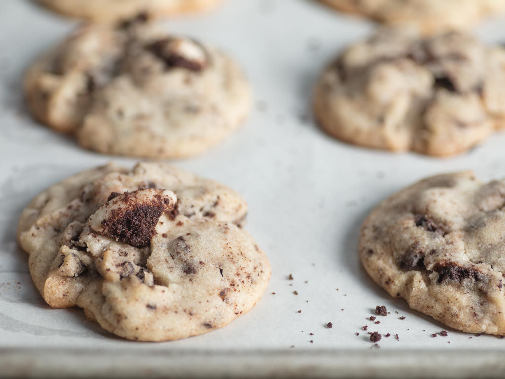

Cream Cookies

Description
An incorporation of cookies and cream. The recipe begins with a classic vanilla-flavored sugar cookie dough. Then, roughly-chopped creme-filled sandwich cookies are mixed in. The power of the mixer breaks up the cookies even more and releases little specks of cookies and cream flavor and color throughout the dough. Next, both semi-sweet chocolate chips and white morsels are folded into this unique cookie dough. This is another way the chocolate and vanilla flavors find their way into every bite, along with some fun texture.
Ingredients
- 2 3/4 cups all purpose flour
- 1 teaspoon baking soda
- 1/2 teaspoon baking powder
- 1/2 teaspoon salt
- 1 cup softened unsalted butter
- 1 1/2 cups granulated sugar
- 1 large egg
- 1 teaspoon vanilla extract
- 1 cup broken oreo cookies
- 1/2 cup semisweet chocolate chips
- 1/2 cup white chocolate chips
Steps
- Gather the ingredients. Preheat oven to 350 F.
- Line baking sheets with parchment paper and set aside.
- In a large bowl, combine the flour, baking soda, and baking powder. Set aside.
- In the large mixing bowl, cream together the butter and sugar until smooth.
- Beat in egg and vanilla extract.
- Gradually add the dry ingredients to the butter mixture until combined.
- Add the broken sandwich cookies to the batter and beat until they are crushed and blended into dough.
- Add the semi-sweet chocolate chips and the white morsels. Mix to combine.
- Scoop 1-inch balls and place 2 inches apart on the prepared baking sheets.
- Bake for 10-12 minutes or until golden around the edges.
- Enjoy warm and fresh from the oven with a cold glass of milk.